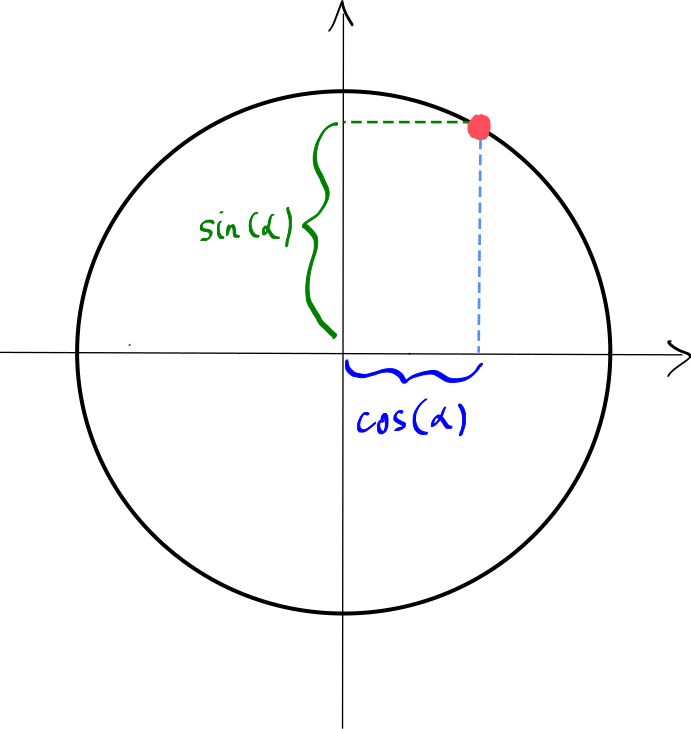

Trigonométrie
Table of Contents
1. Introduction
Qu'est-ce que la trigonométrie ? C'est l'étude des angles. Alors qu'est-ce qu'un angle ?
Pour comprendre ce qu'est un angle, commençons par un exemple (souvent une bonne idée en mathématiques) : 60 degrés.

Notez que, pour désigner un angle, nous avons utilisé un nombre (60) et nous pourrions donc nous demander si les angles sont simplement des nombres. En effet, cette idée est renforcée par le fait que, tout comme les nombres, nous pouvons additionner des angles :
\[60\dg + 30\dg = 90\dg\]
Alors les angles ne sont-ils que des nombres ? La réponse est non, car ils n'ont pas le même comportement. En effet, il y a une façon dont les angles reviennent sur eux-mêmes :
\[ 30\dg + 360\dg = 390\dg = 30\dg.\]
Pour comprendre cela visuellement, nous notons que tandis que les nombres vivent sur une droite infinie :

les angles vivent sur un cercle :

Cela capture le comportement des angles qui reviennent sur eux-mêmes, tout comme un point sur un cercle revient sur lui-même. En mathématiques, tout comme les nombres réels sont correctement conceptualisés comme des points sur une droite (mais pas n'importe quelle droite, la droite des nombres réels), les angles sont simplement des points sur un cercle (mais pas n'importe quel cercle, le cercle trigonométrique). Cela conduit au fait fondamental suivant.
Fait fondamental. Un angle est un point sur le cercle trigonométrique.
Ceci est extrêmement important : un angle n'est ni plus ni moins qu'un point sur un cercle. Par conséquent, la trigonométrie, en tant qu'étude des angles, est simplement l'étude des points sur le cercle. Donc pour l'instant, oublions tout ce que nous pourrions déjà savoir sur les angles, et repartons de cette idée.
Comme mentionné précédemment, il est utile de fixer notre cercle préféré, que nous appelons le cercle trigonométrique.
2. Le cercle trigonométrique
OK, nous nous intéressons aux angles, qui ne sont que des points sur un cercle. Mais comment devrions-nous désigner ces points ? C'est un problème pratique : imaginez que vous appeliez votre ami et que vous vouliez lui communiquer votre angle préféré, c'est-à-dire un point sur le cercle :

Comment décrivez-vous un tel point à votre ami (vous ne pouvez pas simplement le lui montrer car c'est une conversation téléphonique) ? Il existe deux solutions principales à ce problème, et toutes deux nous mèneront à des concepts mathématiques importants.
2.1. Radians
Supposons que vous et votre ami ayez préalablement convenu d'un point spécial sur le cercle trigonométrique appelé le point de départ.
En effet, tout comme la droite des nombres réels n'est pas n'importe quelle droite, le cercle trigonométrique n'est pas n'importe quel cercle : il est accompagné de données supplémentaires, notamment un point de départ spécial sur la droite :
De plus, le rayon du cercle trigonométrique est également fixé, il a une valeur de 1. Avec ces données supplémentaires, une excellent manière de décrire votre angle préféré est de spécifier la distance entre celui-ci et le point de départ, en faisant le tour du cercle :
L'idée est de nommer l'angle d'après cette longueur d'arc. Cela donne naissance à la mesure des angles appelée radians. Ainsi, par exemple, la désignation de notre angle préféré en radians serait 2,356… Pour la plupart des angles « agréables », cette longueur est mieux décrite comme un multiple de \(\pi\), donc par exemple notre angle préféré est mieux désigné par
\[ 2,356\dots \ = \ \ \boxed{\dfrac{3\pi}{4}}.\]
Il serait en effet facile de donner ce nombre à notre ami au téléphone !
Voici un cercle interactif donnant la mesure des angles les plus importants dans les radians.
Conversion entre degrés et radians. Bien que les radians soient mathématiquement supérieurs aux degrés (vous verrez en analyse…), on est souvent plus habitué à penser aux angles en degrés. Savoir convertir est donc utile :
\[\begin{aligned}\text{degré} = \dfrac{\text{rad}}{\pi} \cdot 180 \\ \text{rad} = \dfrac{\text{degré}}{180} \cdot \pi \end{aligned}\]
(p. 27 du formulaire)
2.2. Fonctions Trigonométriques
La façon standard de décrire un point est de donner ses coordonnées. Ainsi, par exemple, avec notre point favori, nous aurions

et les coordonnées pertinentes sont \(-\frac{\sqrt{2}}{2}\) et \(\frac{\sqrt{2}}{2}\).
Nous donnons des noms spéciaux à ces coordonnées :
- la première coordonnée s'appelle \(\cos\), ainsi, par exemple, nous avons
\[\cos\left(\frac{3\pi}{4}\right) = -\frac{\sqrt{2}}{2}\]
- la deuxième coordonnée s'appelle \(\sin\), ainsi, par exemple, nous avons
\[\sin\left(\frac{3\pi}{4}\right) = \frac{\sqrt{2}}{2}.\]
Remarque. On appelle \(\cos\) et \(\sin\) des fonctions trigonométriques. Bien qu'il soit vrai qu'on peut les considérer comme des fonctions, ce ne sera pas encore notre perspective, donc il ne faut pas prendre ce nom trop au sérieux.
Il existe, en effet, une autre fonction trigonométrique appelée \(\tan\), qui peut être définie géométriquement comme suit :
Ainsi, nous avons ici
\[\tan\left( \frac{3\pi}{4} \right) = -1.\]
L'importance de \(\tan\) par rapport à \(\cos\) et \(\sin\) est à la fois moindre et plus subtile. Pour l'instant, nous l'acceptons comme telle.
3. Propriétés des fonctions trigonométriques
3.1. Identités trigonométriques
Soit \(\alpha\) un angle (c'est-à-dire un point sur le cercle).

Notez que dans cette figure, nous pouvons considérer le triangle rectangle suivant.
À partir de cela, nous pouvons utiliser le théorème de Pythagore pour conclure que :
Si nous introduisons \(\tan(\alpha)\) dans l'image, nous pouvons considérer les deux triangles suivants.
Notez que ces deux triangles sont semblables (ils ont les mêmes angles) et sont donc proportionnels. De plus, en considérant les côtés inférieurs, nous voyons que le facteur de proportionnalité est \(\dfrac{1}{\cos(\alpha)}\).
En examinant le côté droit des deux triangles, nous obtenons le résultat suivant.
3.2. Valeurs particulières et symétries
We now explain how to work out the values of \(\cos(\alpha)\), \(\sin(\alpha)\) and \(\tan(\alpha)\) for specific values of \(\alpha\). In each case, we concentrate only on finding \(\cos(\alpha)\) and \(\sin(\alpha)\), and then use our previous result that \(\tan(\alpha) = \frac{\sin(\alpha)}{\cos(\alpha)}\).
"Easy" angles: \(\alpha = 0\), \(\alpha = \dfrac{\pi}{2}\), \(\alpha = \pi\) and \(\alpha = \dfrac{3\pi}{2}\).

For these "easy" angles, we can directly read the values of \(\cos\) and \(\sin\) off the figure. They are summerised in the table below.
| \(\alpha\) | \(\sin(\alpha)\) | \(\cos(\alpha)\) | \(\tan(\alpha)\) |
|---|---|---|---|
| \(0\) | \(0\) | \(1\) | \(0\) |
| \(\frac{\pi}{2}\) | \(1\) | \(0\) | n/a |
| \(\pi\) | \(0\) | \(-1\) | \(0\) |
| \(\frac{3\pi}{2}\) | \(-1\) | \(0\) | n/a |
- \(\alpha = \dfrac{\pi}{4}\)

Looking at the figure, we note that
\[\cos\left(\frac{\pi}{4}\right) = \sin\left(\frac{\pi}{4}\right).\]
We can therefore use the universal identity \(\cos^2(\alpha) + \sin^2(\alpha) = 1\) to find \(\cos\left(\frac{\pi}{4}\right)\):
\[\begin{aligned} \cos^2\left(\frac{\pi}{4}\right) + \sin^2\left(\frac{\pi}{4}\right) &= 1 \\
\cos^2\left(\frac{\pi}{4}\right) + \cos^2\left(\frac{\pi}{4}\right) &= 1\\
2\cdot \cos^2\left(\frac{\pi}{4}\right) &= 1\\
\cos^2\left(\frac{\pi}{4}\right) &= \frac{1}{2} \\
\cos\left(\frac{\pi}{4}\right) = \sqrt{\frac{1}{2}} &= \boxed{\frac{\sqrt{2}}{2}}
\end{aligned}\]
We therefore have
| \(\alpha\) | \(\sin(\alpha)\) | \(\cos(\alpha)\) | \(\tan(\alpha)\) |
|---|---|---|---|
| \(\frac{\pi}{4}\) | \(\frac{\sqrt{2}}{2}\) | \(\frac{\sqrt{2}}{2}\) | \(1\) |
4. Arcs de cercle et secteurs circulaires
Considérons l'arc de cercle suivant défini par un angle \(\alpha = \frac{\pi}{3}\) (mesuré en radians) :
Comme le rayon est égal à un, nous pouvons affirmer que la longueur de \(l\) est exactement \(\frac{\pi}{3}\). Alors que pouvons-nous dire dans ce cas ?
Par le principe de proportionnalité, nous pouvons affirmer qu'ici la longueur de \(l\) est \(4 \cdot \dfrac{\pi}{3} = \dfrac{4\pi}{3}\).
Cela nous mène au théorème suivant :
Théorème. Considérons un secteur circulaire avec un angle \(\alpha\) et un rayon \(r\) (en radian). Alors nous avons :
\[l=\alpha \cdot r,\]
où \(l\) est la longueur de l'arc. (p. 17 du formulaire)
De même, nous avons un résultat analogue pour l'aire d'un tel secteur circulaire.
Théorème. Considérons un secteur circulaire avec un angle \(\alpha\) et un rayon \(r\) (en radian). Alors nous avons :
\[A=\frac{1}{2}\cdot\alpha \cdot r^2,\]
où \(A\) est l'aire du secteur circulaire. (p. 17 du formulaire)
Remarque. Notez que dans la seconde formule apparaît le facteur \(r^2\), et non pas simplement \(r\). C'est parce que nous mesurons une aire, et non une longueur (comparez avec un carré).